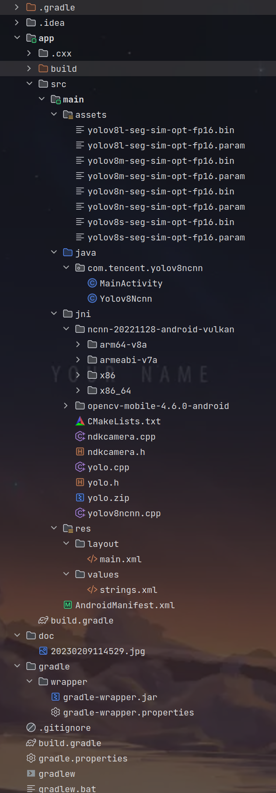
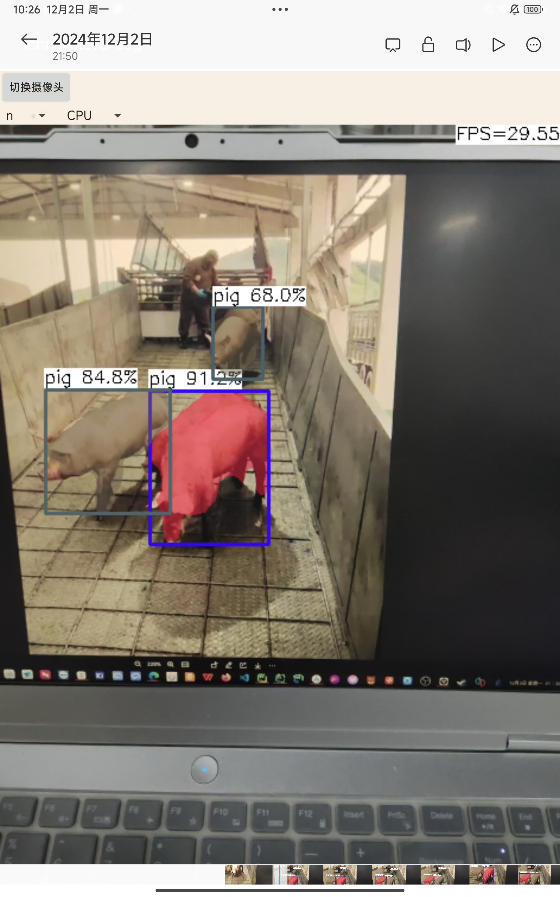
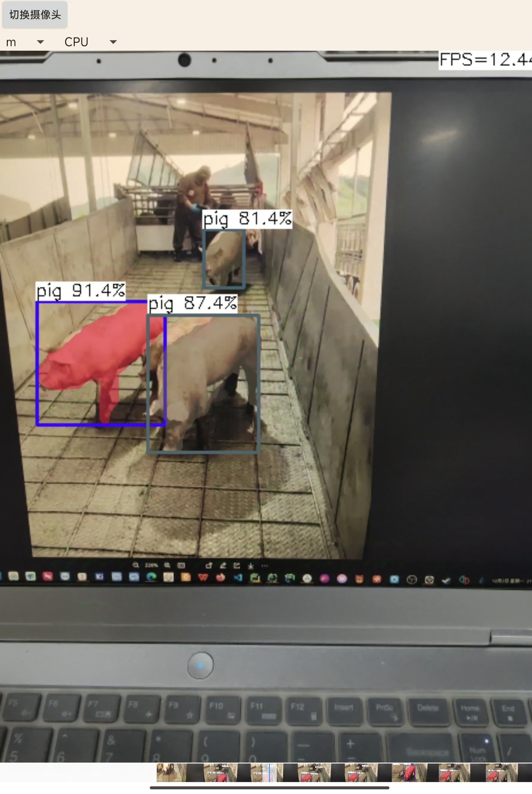
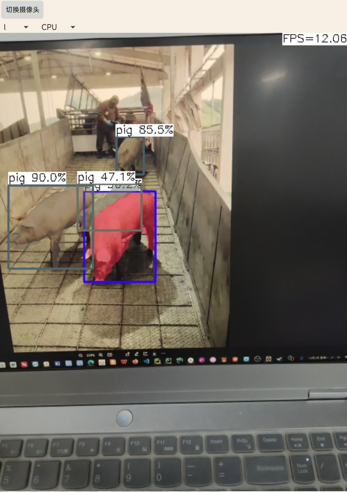
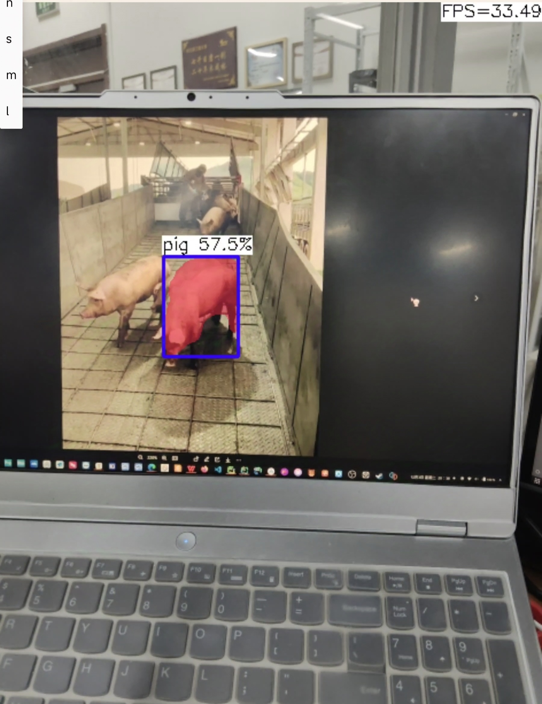
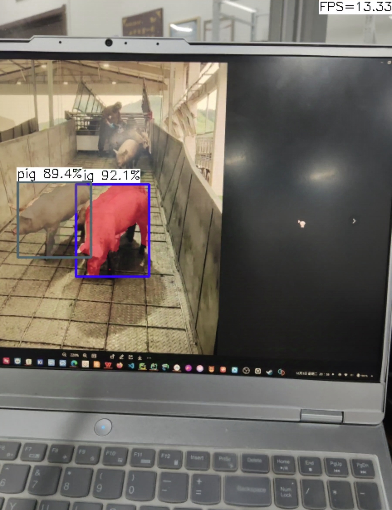
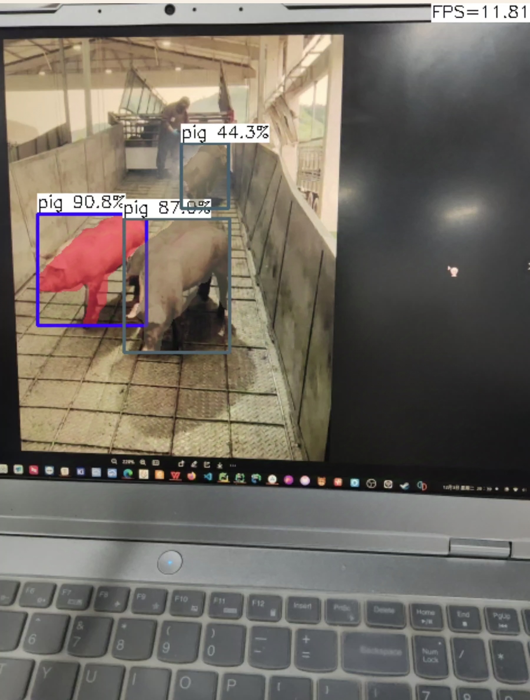

yoloV8-segment模型安卓端部署
注：开发环境为ubuntu20.04;
ncnn为2022.11.28版本;
opencv-mobile为4.6.0版本;
使用yoloV8n,m,l-seg;
介绍：ncnn是一款非常高效易用的深度学习推理框架，支持各种神经网络模型，如pytorch、tensorflow、onnx等，以及多种硬件后端，如x86、arm、riscv、mips、vulkan等。ncnn 是一个为手机端极致优化的高性能神经网络前向计算框架。 ncnn 从设计之初深刻考虑手机端的部署和使用。 无第三方依赖，跨平台，手机端 cpu 的速度快于目前所有已知的开源框架。 基于 ncnn，开发者能够将深度学习算法轻松移植到手机端高效执行， 开发出人工智能 APP，将 AI 带到你的指尖。 ncnn 目前已在腾讯多款应用中使用，如：QQ，Qzone，微信，天天 P 图等。
一.模型转换：best.pt——>yolov8n-seg.bin和yolov8n-seg.param
(以yolov8n为例)
起初，直接使用ultralytics官方转换，但是转换后的模型导致APP闪退，查看yolov8n-seg.param:
得知：里面有很多的MemoryData，不够干净。
于是模型转换step by step:
1. build ncnn
1. sudo apt install cmake protobuf-compiler libprotobuf-dev libopencv-dev
2, gitclone https://github.com/Tencent/ncnn/releases
3, 编译 NCNN
cd ncnn-master
mkdir build
cd build
cmake ..
make
make install
得到了onnx2ncnn转换工具
2. convert yolov8 pt ->ONNX
from ultralytics import YOLO
# load yolov8 segment model
model = YOLO("your_path")
# concert the model
success = model.export(format="onnx", opset=12, simplify=True)
3. onnx2ncnn
ONNX介绍
ONNX是一种针对机器学习所设计的开放式的文件格式，用于存储训练好的模型。它使得不同的深度学习框架（如Pytorch, MXNet）可以采用相同格式存储模型数据。是一种便于在各个主流深度学习框架中迁移模型的中间表达格式。
onnx2ncnn xxx.onnx xxx.param xxx.bin
在这里xxx.param 存储了模型的参数信息，它记录了计算图的结构。而xxx.bin 则存放了模型的所有具体参数。就可以使用 ncnn 框架来加载和运行这个模型了。
4. 但是也会闪退！！！
分析一下yolov8n-seg.param文件，问题一样，也是存在MemoryData问题和模型缺少permute层的问题,都会导致ncnn框架无法正确解析param模型
坑：需修改ultralytics源码modules文件夹里的block.py和head.py两个文件,修改3个forward函数,改变前向传播的方式：
- class C2f(nn.Module):
def forward(self, x):
x = self.cv1(x)
x = [x, x[:, self.c:, ...]]
x.extend(m(x[-1]) for m in self.m)
x.pop(1)
return self.cv2(torch.cat(x, 1))
- class Detect(nn.Module):
def forward(self, x):
shape = x[0].shape
for i in range(self.nl):
x[i] = torch.cat((self.cv2[i](x[i]), self.cv3[i](x[i])), 1)
if self.training:
return x
elif self.dynamic or self.shape != shape:
self.anchors, self.strides = (x.transpose(0, 1) for x in make_anchors(x, self.stride, 0.5))
self.shape = shape
pred = torch.cat([xi.view(shape[0], self.no, -1) for xi in x], 2)
return pred
- class Segment(Detect):
def forward(self, x):
p = self.proto(x[0]) # mask protos
bs = p.shape[0] # batch size
mc = torch.cat([self.cv4[i](x[i]).view(bs, self.nm, -1) for i in range(self.nl)], 2)
x = self.detect(self, x)
if self.training:
return x, mc, p
return (torch.cat([x, mc], 1).permute(0, 2, 1), p.view(bs, self.nm, -1)) if self.export else (torch.cat([x[0], mc], 1), (x[1], mc, p))
5. 重新执行3，4步操作
二. 模型转换完毕，下面开始使用Android studio构建安卓工程
1. Configure ncnn
Download [ncnn-YYYYMMDD-android-vulkan].（预编译库）（来自腾讯优图实验室的nihui大神的开源力作）

Extract ncnn-YYYYMMDD-android-vulkan.zip into app/src/main/jni folder and change the ncnn_DIR path to yours in app/src/main/jni/CMakeLists.txt.
2. Configure OpenCV
Download opencv-mobile-XYZ-android (安卓opencv库)(这个也是nihui大神的又一开源力作,适合在安卓移动端使用的轻量级opencv版本)
step 1. download opencv-mobile source
wget -q https://github.com/nihui/opencv-mobile/releases/latest/download/opencv-mobile-4.10.0.zip
unzip -q opencv-mobile-4.10.0.zip
cd opencv-mobile-4.10.0
step 2. apply your opencv option changes to options.txt
vim options.txt
step 3. build your opencv package with cmake
mkdir -p build
cd build
cmake -DCMAKE_INSTALL_PREFIX=install \
-DCMAKE_BUILD_TYPE=Release \
`cat ../options.txt` \
-DBUILD_opencv_world=OFF ..
make -j4
make install
Extract opencv-mobile-XYZ-android.zip into app/src/main/jni and change the OpenCV_DIR path to yours in app/src/main/jni/CMakeLists.txt.
3. Android studio构建

使用NDK26.1，java
项目目录构成：


三、构建，烧录
打开安卓设备（本人使用小米,CPU为骁龙8Gen1）开发者选项，USB调试，安装选项，烧录：
效果：
n:
m:
l:
可切换前后摄像头，可切换CPU/GPU
结果分析：
n:帧率在30帧左右，有时会检测不准确，无法将两个挨得较近的识别目标分开
m:帧率在12帧左右，准确性进一步提高
l: 帧率在10帧左右，较为准确，可将挨得较近的识别目标分开
四、模型量化
我们常说的模型量化就是将浮点存储（运算）转换为整型存储（运算）的一种模型压缩技术。比如：原来表示一个权重或偏置需要使用FP32表示，使用了INT8量化后只需要使用一个INT8来表示就可以了。
- 合并bn层
./ncnnoptimize xxx.param xxx.bin xxx_opt.param xxx_opt.bin 0
- 生成量化图像集
1.下载校准数据集
git clone https://github.com/nihui/imagenet-sample-images
2.生成量化图像集
find images/ -type f > imagelist.txt
3.生成量化表
./ncnn2table xxx-opt.param xxx-opt.bin imagelist.txt yolov8-seg.table mean=[104,117,123] norm=[0.017,0.017,0.017] shape=[256,256,3] pixel=BGR thread=8 method=kl
- int8 量化
./ncnn2int8 xxx.param xxx.bin xxx_int8.param xxx_int8.bin yolov8-seg.table
把生成的量化后的bin和param替换掉之前的模型，
重新执行第三步即可
效果：
n:
m:
l:
结果分析：
n:帧率提升到34帧左右，检测不太准确，会漏检
m:帧率提升到14帧左右，准确性有些下降，
l: 帧率提升到12帧左右，且准确度下降但不多